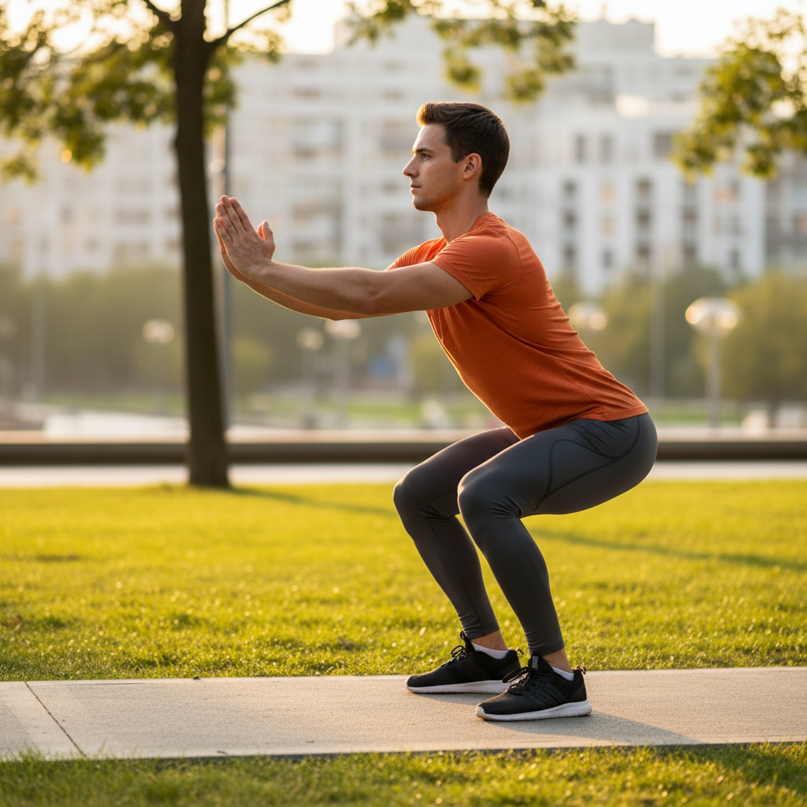
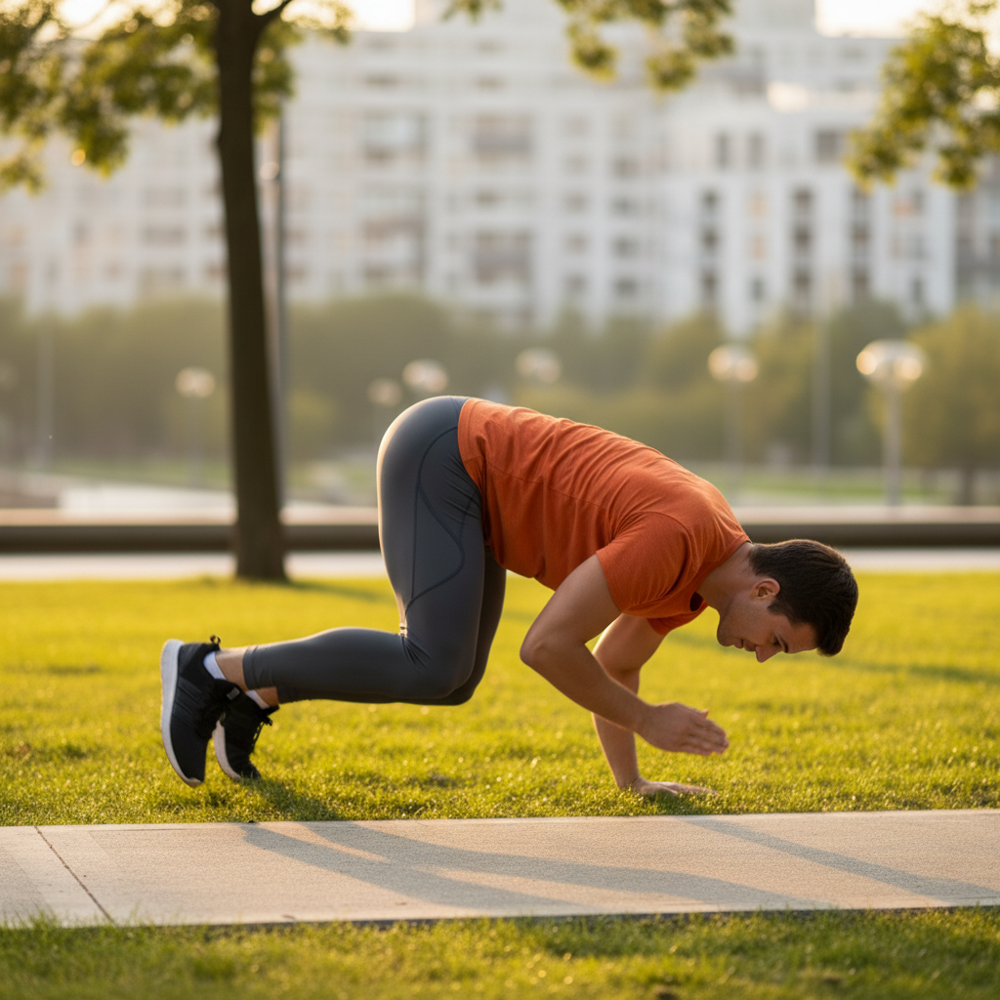
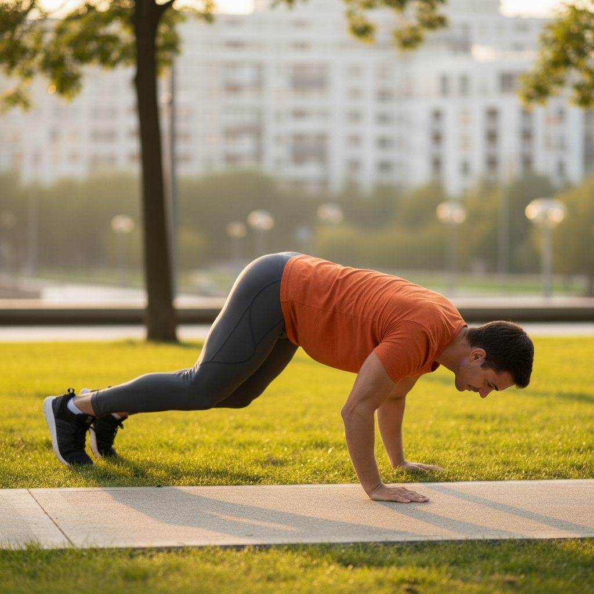
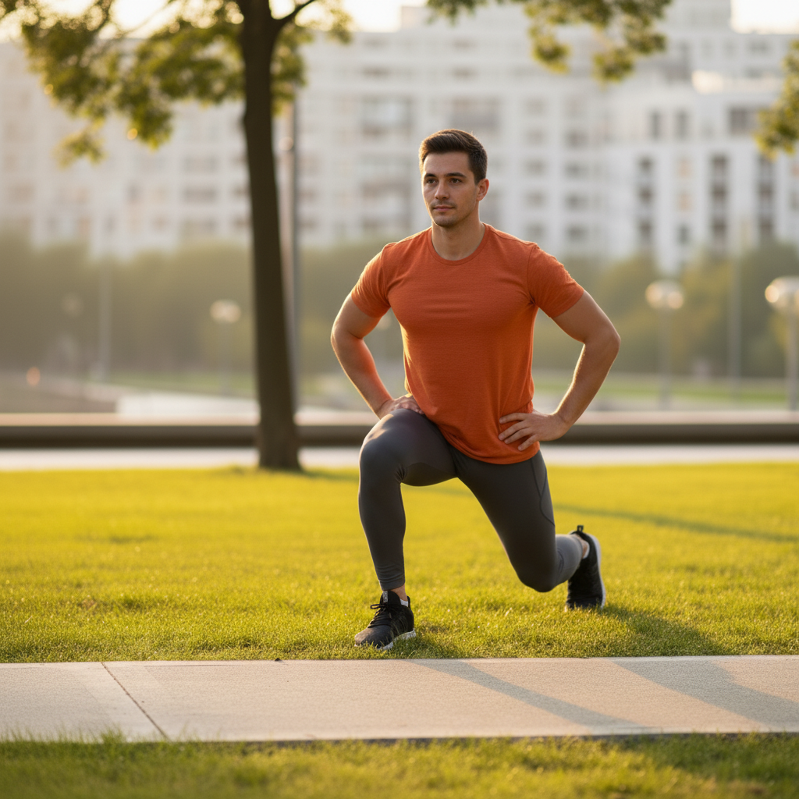
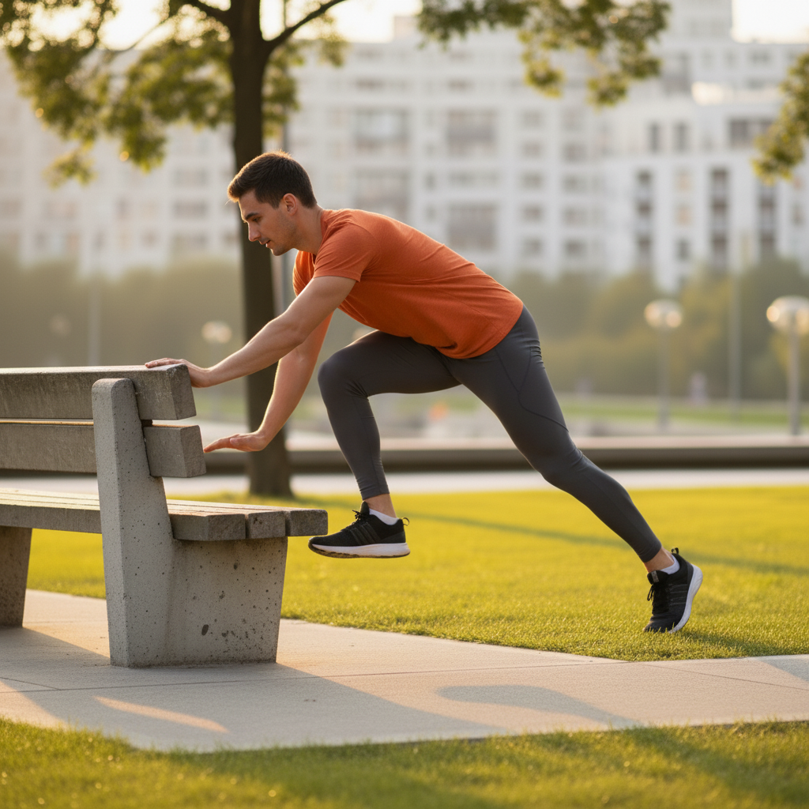
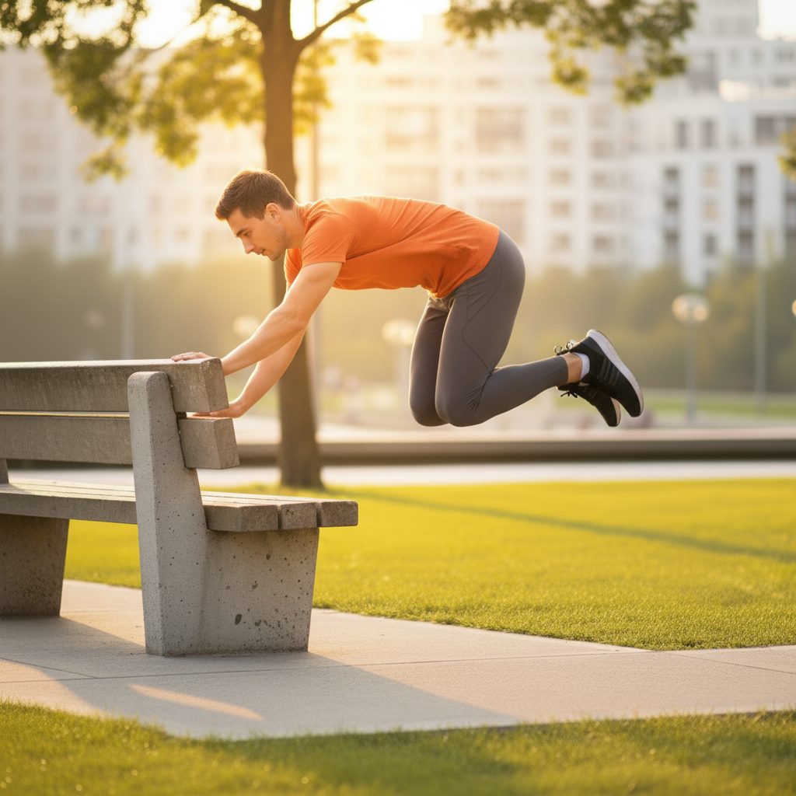

Learn the fundamental movements of parkour, including safe landing techniques, balancing, and vaulting. This tutorial provides a step-by-step guide for beginners to build a solid foundation in the art of movement.
⏱️ Estimated time: 20-25 minutes
Before attempting any parkour movements, it's crucial to prepare your body. Perform a 10-15 minute warm-up including jogging, jumping jacks, and dynamic stretches like leg swings and arm circles. Follow this with conditioning exercises: 3 sets of 15 squats, 10 push-ups, and a 30-second plank to build foundational strength.
⏱️ Estimated time: 30 minutes of practice
The safety roll distributes the impact of a jump or fall across your body to prevent injury. Start from a squat. Fall forward diagonally, tucking your chin to your chest. Make contact with the ground with the back of your shoulder (opposite to your leading foot), roll diagonally across your back, and come up on the opposite foot, ready to move. Practice on soft grass or a mat first.
⏱️ Estimated time: 20 minutes of practice
A precision jump is about landing accurately on a small target. Start with a short distance (2-3 feet) on the ground, marking a take-off and landing line. Swing your arms back, then forward and up as you jump. Aim to land on the balls of your feet, absorbing the impact by bending your knees. Your feet should land silently and precisely on the target line.
⏱️ Estimated time: 15-20 minutes of practice
Balance is key. Start by walking along a line on the ground. Once comfortable, progress to a low, wide curb or railing. Walk forward, backward, and even try turning around. Keep your arms out to the side for balance, your core engaged, and your eyes focused on a point in the distance, not your feet.
⏱️ Estimated time: 25 minutes of practice
The safety vault is a simple way to get over low obstacles. Approach a low wall or bench (waist-high or lower). Place your inside hand on the obstacle. Step up onto the obstacle with your inside foot. As you move over, place your outside hand down and swing your outside leg through the gap. Land softly on the other side.
⏱️ Estimated time: 30 minutes of practice
The speed vault allows you to clear an obstacle while maintaining momentum. Approach the obstacle (waist-high or lower) from a slight angle. Plant your inside hand on the obstacle and push off, kicking your legs up and sideways to clear it. Your body should be nearly parallel to the ground as you pass over. Land on your outside foot first, ready to continue running.
